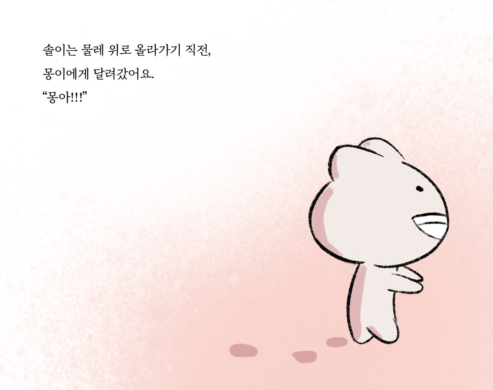

스토리
도자기 나라는 생명과 꿈이 깃든 신비로운 땅이다. 이곳에 사는 캐릭터들은 모두 도자기를 만드는 흙으로 태어나고, 자신의 꿈과 정체성을 찾으면 포치라는 작은 도우미 캐릭터가 나타난다. 포치들은 도자기 나라의 전통인 변신 의식에 중요한 역할을 하며, 각자의 주인공을 돕기 위해 존재한다. 이 변신은 도자기 나라에서 가장 신성한 의식으로, 물레 위에 올라가며 도자기 작품으로 완성되는 순간을 의미한다. 그러나 이곳의 전통과 규칙 속에서 갈등과 고민이 싹트기도 한다. 특히 주인공 몽은 불확실한 꿈과 정체성으로 혼란을 겪으며, 친구들과 함께 성장하고 변화를 받아들이는 여정을 시작한다.
